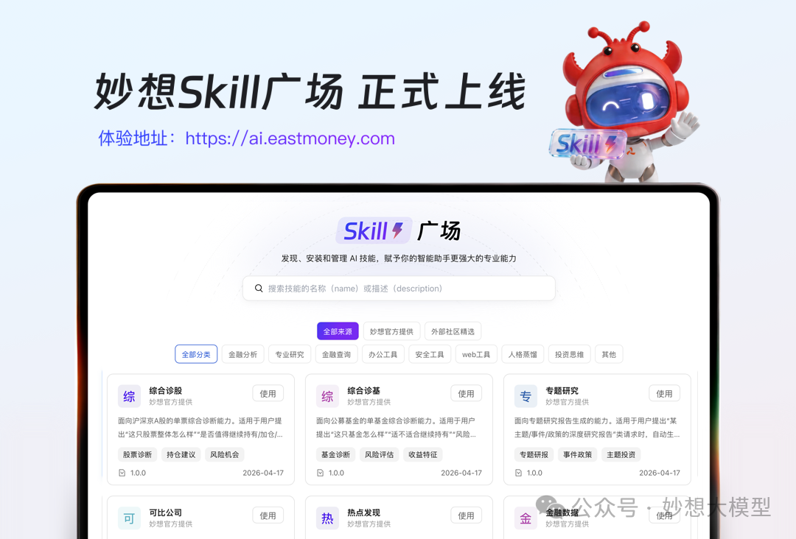
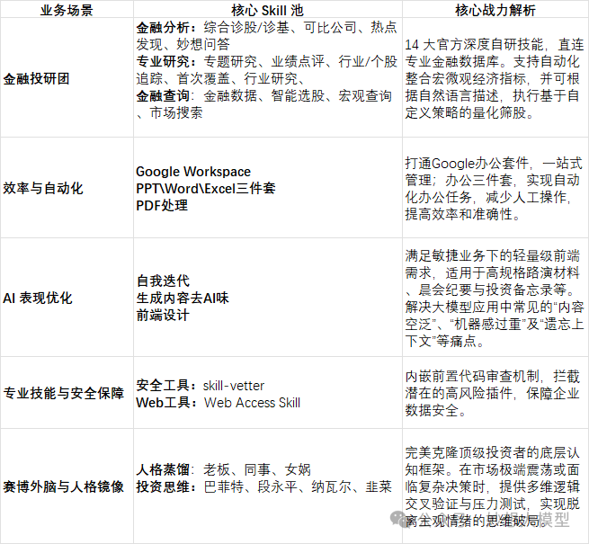

🎯 调研范围
单竞品深拆 + 行业参照 + 我方方案对照
| 维度 | 执行口径 |
|---|---|
| 目标问题 | 东财妙想 Skills 是什么服务、如何形成业务闭环、盈米该学什么 |
| 核心链路 | 发现 → 理解 → 使用/安装 → Agent 调度 → 数据执行 → 计量 → 回流主业务 |
| 体验维度 | D1 信息架构、D2 流程、D3 视觉、D4 文案、D5 行为、D6 异常、D7 跨端、D8 合规 |
| 证据截止 | 2026-07-28；宣传数字与实测状态分别标注 |
| 边界 | 未读取或暴露账号凭证；未把规划 Demo 当作已上线能力 |
输入访问密码，查看东方财富妙想 AI Skills 平台服务拆解与盈米行动建议。
提示：本页面密码仅为前端访问提示，不等同于服务端安全鉴权。
它不是一个孤立的 Skill 目录，而是把金融数据、专业方法、Agent 调度、跨端分发、积分计量和东方财富账户体系连成一条服务增长链。
广场负责发现，妙想 Claw 负责调度，MCP/数据库负责执行，API Key 与积分负责身份和计量，APP/ima/小艺/ArkClaw 负责分发。缺一层都无法形成平台飞轮。SRC-P-002/003/004/006
用户端应卖“基金诊断、家庭规划、账户复盘”等可持续服务；Skill/MCP 只在专业视图和开发者层出现。统一 Service ID 贯穿版本、权限、评测、运行与结算。
单竞品深拆 + 行业参照 + 我方方案对照
| 维度 | 执行口径 |
|---|---|
| 目标问题 | 东财妙想 Skills 是什么服务、如何形成业务闭环、盈米该学什么 |
| 核心链路 | 发现 → 理解 → 使用/安装 → Agent 调度 → 数据执行 → 计量 → 回流主业务 |
| 体验维度 | D1 信息架构、D2 流程、D3 视觉、D4 文案、D5 行为、D6 异常、D7 跨端、D8 合规 |
| 证据截止 | 2026-07-28；宣传数字与实测状态分别标注 |
| 边界 | 未读取或暴露账号凭证；未把规划 Demo 当作已上线能力 |
关键结论必须挂 SRC 编号
官方曾分别披露“6 大核心功能”“31 款广场 Skill”“8 项外部分发 Skill”“7 项 ima Skill”。这些是不同日期、不同渠道的产品口径，不能合并成一个当前总数。SRC-P-001/002/005/006
事实 → 判断 → 对盈米的动作
先看东财六层闭环，再看同类产品在哪一层竞争
搜索、来源筛选、分类、详情、使用、创建与下载。
意图识别、按需加载、跨 Skill 串联、文件与定时任务。
金融分析、研究、查询、办公、安全、人格与投资框架。
Streamable HTTP、专业数据、API Key、量化接口。
Claw 与 MCP/Skill 统一计量，权益和积分包承接付费。
东方财富 APP、ima、小艺、ArkClaw 与用户自有 Claw。


| 竞品 / 参照 | 产品重心 | 发现与安装 | 数据 / 执行 | 调度 / 交付 | 商业闭环 | 对盈米的启示 | 证据 |
|---|---|---|---|---|---|---|---|
| 东方财富妙想 | C/B 两端金融 AI 入口 | 广场、下载、Key、跨端分发 | Choice / MCP / 官方 Skill | Claw 按需加载与跨 Skill 串联 | 积分、会员、账户/Choice 权益 | 最值得学完整飞轮；治理透明度要补强 | SRC-P-002/003/004 |
| Wind AIFin Market | 金融能力市场 | 公开市场式发现 | Wind 数据与优质 Skill | 兼容主流 Agent | 专业数据订阅逻辑 | 开发者能力市场的直接参照 | SRC-P-011 |
| 同花顺 iFinD | 机构投研工作流 | 公开广场证据有限 | MCP + Skills + 专业数据 | 定制 Agent、定时自动任务 | B 端终端与解决方案 | 对标自动化、风控、舆情与机构场景 | SRC-P-012 |
| 通达信 TDX SkillHub | 金融 Skill 目录 | 源码/视图、自然语言安装提示 | 内置与外部 Skill 分层 | TdxClaw 承接 | 未见统一计量公开证据 | 源码透明、内置边界、安装提示值得借鉴 | SRC-P-010 |
| 盈米 OAP / AI 实验室 | 投顾服务与企业治理 | 服务广场为规划 / Demo | 投研/交易/账户/适当性能力 | 组件化服务、来源与版本链方向 | 经营结果仍需验证 | 不与数据商拼“多”；把服务可信交付做深 | SRC-I-001/002 |
SWOT · 五力 · PESTLE；对象为东方财富妙想 Skills 服务
东方财富账户与流量、Choice 专业数据、C/B 多终端、证券/基金业务承接，形成别人难复制的分发与数据组合。
Skill 元数据、权限和评测不透明；安装/密钥治理偏工程化；官方、内置、社区混排会放大质量感知风险。
Agent 成为新入口后，专业金融能力可以从“终端功能”变成跨平台可计量服务。
Wind、iFinD、TDX 同步开放；通用 Agent 平台掌握入口；金融数据错误、违规荐股或外部 Skill 风险会反噬品牌。
SO：把数据/账户优势包装为跨端服务；WO：公开评测、权限和成本；ST：用账户和专业数据提高切换成本；WT：外部 Skill 隔离、白名单和金融输出闸门。
| 力量 | 状态 / 趋势 | 关键动作 |
|---|---|---|
| 同业竞争 | 高 · 升温 | 从工具数竞争转向任务成功率与分发 |
| 上游议价 | 中 · 分化 | 自有数据降依赖，第三方模型保持可替换 |
| 客户议价 | 中高 · 上升 | 用个人知识、账户与持续任务提高留存 |
| 新进入者 | 中 · 上升 | 门槛从建站转向数据合规和结果质量 |
| 替代品 | 高 · 上升 | 通用 Agent + 单一 MCP 可替代“广场” |
最关键两力：同业竞争、替代品。单纯堆 Skill 会迅速同质化，必须把数据、账户、持续服务和可信交付绑定起来。
自然语言分析更容易越过“信息工具—投资建议”边界。
监控：输出类型、风险揭示、适当性命中统一积分便于经营，但用户需要知道一次任务为何消耗、价值是否可比较。
监控：单位成功任务成本、积分投诉数据日期、来源和口径冲突会直接损害金融品牌。
监控：引用完整率、冲突拦截率Streamable HTTP 增强互操作，但 Key、客户端兼容和供应链安全成为新门槛。
监控：兼容客户端、连接成功率、密钥事件“外部社区精选”仍需要作者、许可证、数据出境与运行权限证明。
监控：签名、许可证、权限变更、下架 SLA按需加载能降低 Token 消耗，但只有路由可观测才能证明效率。
监控：路由命中率、降级率、Token / 成功任务每条结论含事实、影响、动作和证据
官方把复杂部署压缩为一键部署，Claw 自动判断意图、选择 Skill 并完成任务。影响：没有 Agent 调度与持续任务，广场只会成为低频下载站。动作：盈米把 AI 小顾作为服务入口，把 Skill 市场下沉为能力供给层。
ima、小艺、ArkClaw 等渠道扩大使用面，但领取 Key、积分和部分会员权益仍回到东方财富账号、Choice 权限或证券账户。动作：盈米每个外部分发服务都应有可归因的身份、额度、渠道和回流路径。
当前卡片呈现名称、来源、描述、标签、版本和日期；缺少权限、依赖、输入输出样例、覆盖资产、数据时点、单次成本、评测和失败边界。动作：建立服务卡强制字段与可比较的测试结果。
官方安装文档覆盖 8 类 Agent，服务为 Streamable HTTP，并要求在配置中写入字面量 em_api_key；文档还包含自动检测环境变量和读取实际 Key 的指令。公开文档未说明细粒度 scope、过期、轮换或 OAuth。动作：不可照抄明文 Key 路线，应采用短期/可撤销/按服务授权。
010350 同题实测中，“综合诊基”未直接完成，降级到通用金融助手；结果同时出现负收益、最大回撤 0% 和盈利百分比 100% 等矛盾。动作：每次服务运行记录命中 Skill、降级原因、字段缺失、数据源、as_of 和一致性拦截。
页面展示外部社区精选，并包含 skill-vetter 等安全工具；但公开页面未展示作者验证、许可证、签名、权限清单、评测分、安装量、问题率或下架机制。动作：盈米把这些治理证据做成卡片前台，而不是后台流程。
值得学，但要按盈米的投顾边界重新设计
普通用户选择“要完成什么”，专业用户查看 Prompt / Skill / Agent / MCP。
同一服务对象连接模板、组件、Skill、Agent、MCP、权限、运行、计量和结算。
不只显示版本日期，还显示真实任务成功率和边界。
核心服务保持一致，针对 ChatGPT、OpenClaw、企业 Agent、APP 生成适配包。
Owner、依赖、复杂度与验收信号齐全
| 优先级 | 动作 | 预期影响 | 复杂度 | 依赖 | Owner | 验收信号 |
|---|---|---|---|---|---|---|
| P0 | 定义 Service ID 与对象模型 | 统一能力、服务、渠道、运行和结算 | 中 | OAP 台账 / 身份体系 | OAP 产品 + 架构 | 首批 10 个服务全链路可追溯 |
| P0 | 建立服务卡强制字段 | 用户可判断是否适用、可信和划算 | 低 | 产品/合规/投研字段共识 | AI Hub 产品 | 字段完整率 100% |
| P0 | 上线发布与评测闸门 | 阻断错误、越权和不可复现服务 | 高 | 回归集、口径规则、沙箱 | 平台工程 + 风控 | P0 用例通过才可公开 |
| P0 | 重做认证与密钥策略 | 避免明文长期 Key 和越权调用 | 高 | STARGATE / OAuth / 审计 | 安全 + 开放平台 | scope、过期、撤销、轮换可用 |
| P1 | 服务路由与降级可观测 | 区分原 Skill 成功与兜底结果 | 中 | Agent 运行事件规范 | Agent 平台 | 路由/降级/缺失字段可查询 |
| P1 | 首批结果型服务货架 | 从工具展示转向用户任务交付 | 中 | 小顾、基金、策略、规划团队 | 场景产品 Owner | 首轮成功率与复用率达标 |
| P1 | 统一用量与成本事件 | 支撑套餐、渠道和单位经济模型 | 中 | 计量网关 / 账务口径 | 商业化 + 数据 | 可算单次成功任务毛利 |
| P2 | 建设渠道适配器 | 一次建设，多端分发 | 高 | 服务契约稳定 | 开放平台 | 2 个外部 Agent 同版运行 |
| P2 | 创作者与机构共建机制 | 扩大供给而不失控 | 高 | 审核、分成、版权、下架 | 生态运营 + 法务 | 首批白名单共建服务上线 |
不先做大广场；先让 10 个服务可追溯、可评测、可撤销。
建议基金诊断、账户复盘、家庭健康体检；验证首次成功与复用。
只有单位经济与治理跑通后，再扩大创作者和渠道供给。
北极星不是 Skill 数量，而是“月度成功完成且被再次运行的服务数”。配套指标：首次成功率、引用完整率、P0 冲突拦截率、降级率、每次成功任务成本、30 天复用率、服务→业务转化率。
U = 实测 / 用户材料；P = 公开资料；I = 盈米内部规划产物
2026-07-28 已登录页面实测：搜索、4 类来源、8 类分类、卡片元数据、API Key/下载/创建入口。
打开官网010350 三家金融 MCP/Skills 同题实测：东财路由降级与口径矛盾。
查看实测报告2026-03-13 新华财经：6 大核心场景、机构级 MCP 金融数据库。
查看来源2026-04-18 妙想官方：首批 31 款、五大战区、按需加载与跨 Skill 串联。
查看来源2026-03-22 妙想官方：Claw 一键部署、默认内置 Skill、自动调度与私有数据结合。
查看来源2026-06-29 妙想官方：MCP 上线、Claw 开放、统一积分计量与权益来源。
查看来源2026-06-29 妙想官方：7 个 Skill 上线 ima，API Key + 安装 + Copilot 三步链路。
查看来源2026-04-28 妙想官方：8 项标准化 Skill 接入华为小艺 Claw。
查看来源2026-06-15 妙想官方：Claw 与 Skill 广场进入东方财富 APP，移动端管理技能库。
查看来源2026-03-28 官方会员说明：旧版按 Skill 日调用次数和证券账户权益扩容。
查看来源妙想 MCP 安装文档：Streamable HTTP、em_api_key、8 类 Agent 与配置方式。
查看官方文档通达信 TDX SkillHub：分类、自然语言安装提示、内置技能边界与源码视图。
查看竞品Wind AIFin Market：金融能力市场、MCP 协议与主流 Agent 兼容。
查看竞品同花顺 iFinD：MCP、Skills、投研 Agent 和定时自动任务公开说明。
查看公开披露